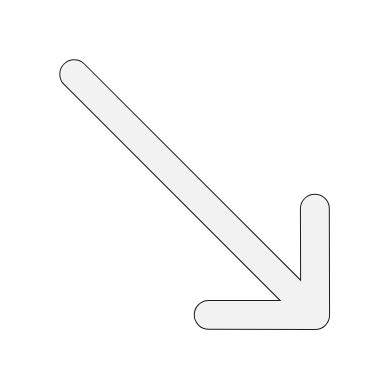
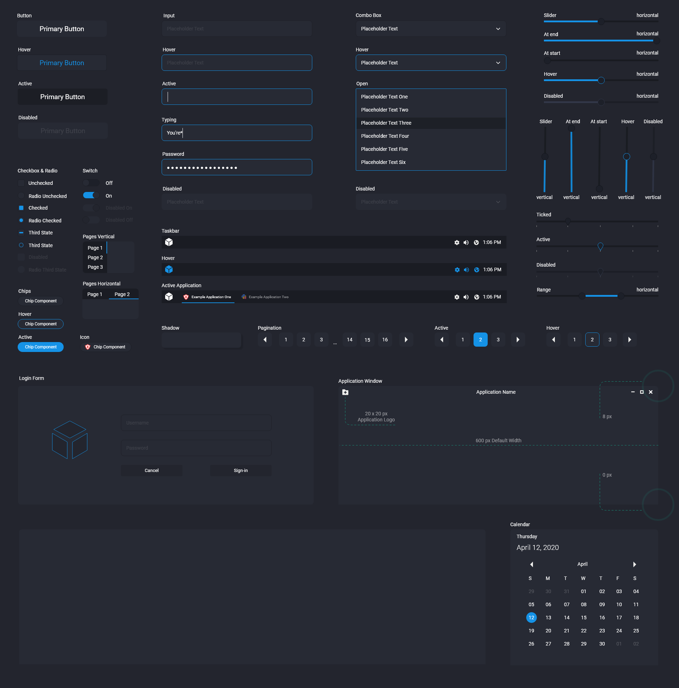
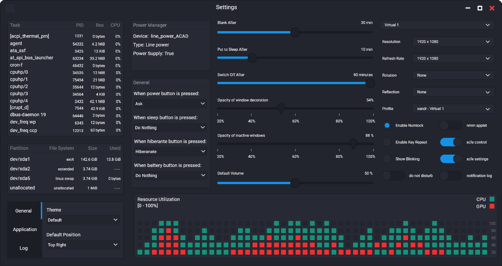
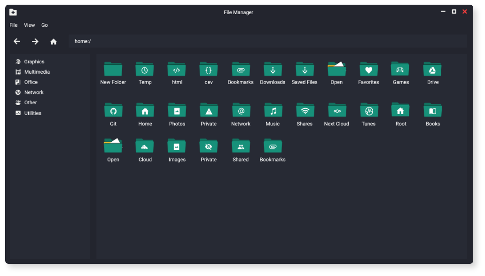

Easy Web

Easy Web Desktop
Mobile
UI/UX Design / Graphic Design / Development
Cloud Operating
System
As easy
as it gets.
Easy Web Desktop is an
cloud based operating system. Designed for netbooks and
low spec computers. It supports a GUI Interface and a lot of the things that you see
on desktop and mobile native operating systems.


A fully fledged Operating
System - on the web.
The system was equipped with features ranging from customizable
icons to file preferences, themes, metrics and more. All of which, had to be carefully considered, and
assigned their respective place in the system. And always having to conform to our design constraints.

Creating the Easy Web
Design Language
There were 4 cornerstones
that had to be
consulted, to create the Easy Web Design Language. The design had to be
Flexible
People expect an OS to be intuitive, while
simultaneously
adaptable to their workflow. Many apps offer configurable preferences, customizable interfaces and alternate
ways of completing tasks. Windows can often be resized, interface elements hidden or repositioned. Tasks can
be initiated from toolbars, menus, controls, and more. A flexible OS facilitates learning through
discoverability.
Expansive
Large, high-resolution displays are typical for
most users, and people often extend their workspace by connecting additional displays. Easy Web Desktop can
leverage this expansiveness and provide value by utilizing a wide range of interface components—like tabs,
sidebars, sheets, and panels—and supporting immersive features like full-screen mode.
Capable
Often people are using devices that lack capable
hardware and software, with this solution, users should be able to harness power through the web and be
allowed to get into intensive workflows that meet all kinds of niche user needs, without needing a powerful
device.
Focused
Easy Web Desktop is designed to keep the current
task clear and in focus. Visual contrast, translucency, and a large drop shadow make it easy to
differentiate the active window from inactive windows. Interfaces defer to content and related controls.
Throughout the system, adornments are subtle and appropriate.
